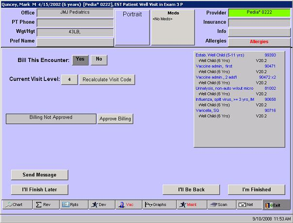
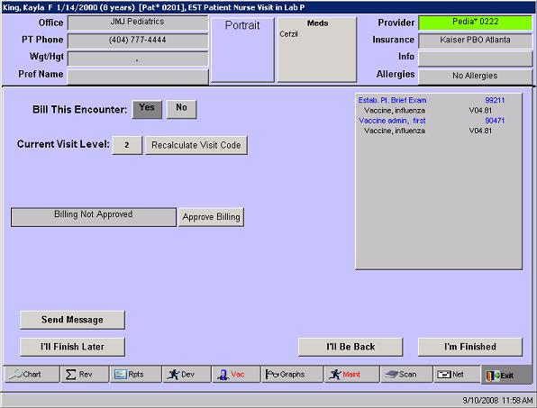
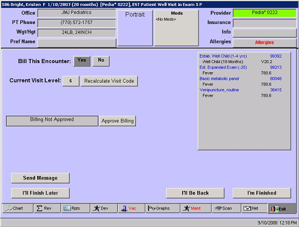

In this solution...
- Description
- Want to Learn More?
- Related Solutions
- Related Education Opportunities
Description
With a well visit, the encounter visit level coding algorithm is not used. Well visits are coded according to the age of the patient and whether he/she is new or established.
 NOTE: The encounter visit code is NOT based on the encounter type for the visit, but on the type of assessment selected: Sick or Well. NOTE: The encounter visit code is NOT based on the encounter type for the visit, but on the type of assessment selected: Sick or Well.
There are a few areas that need to be checked to ensure proper coding on your well visits. Three well visit scenarios are discussed below.
Simple Well Visit
A simple well visit has a well assessment and no sick assessments. The provider selects the Well Assessment from the list (or selects Auto Well). The billing should appear as below.

The well visit code is based on the age of the patient.
Billable items are attached to the well assessment, such as the immunization and vaccine administration codes.
Vaccine Only Visit
A special type of well visit is the vaccine only visit. When a patient has been seen but is unable to get the vaccines on the day of the well visit they often return at a later time for a Nurse only visit.
The clinical staff person who owns the encounter must select an assessment in order for the encounter to bill correctly. In this case, instead of selecting a well assessment, the clinical staffer chooses a Vaccine assessment ('V' code) that corresponds to the disease that the patient is being vaccinated for. If multiple vaccines will be administered, a Vaccine assessment must be selected for each.
The Billining screen will appear as below.

Refer to How to: Document a Nurse Only Visit for step by step instructions on documenting this type of encounter.
Well Visit with a Sick Assessment
At times a patient coming in for a well visit will also have a complaint or has an ongoing chronic problem that the provider needs to document and bill for. This type of situation requires the user to make more manual 'fixes' to the billing.
The main assessment for the encounter should be the well assessment. A secondary visit code (modifier -25) can be added to bill for the sick part of the encounter.
Billable items need to be attached to the appropriate assessment, that is, a vaccine needs to be attached to the well assessment and labs or in-office medications to treat a sick assessment need to be attached to the sick assessment(s).
The Billing screen will appear as below:

Refer to How to: Document a Well Visit with a Sick Assessment for step-by-step instructions on documenting this type of encounter.
|